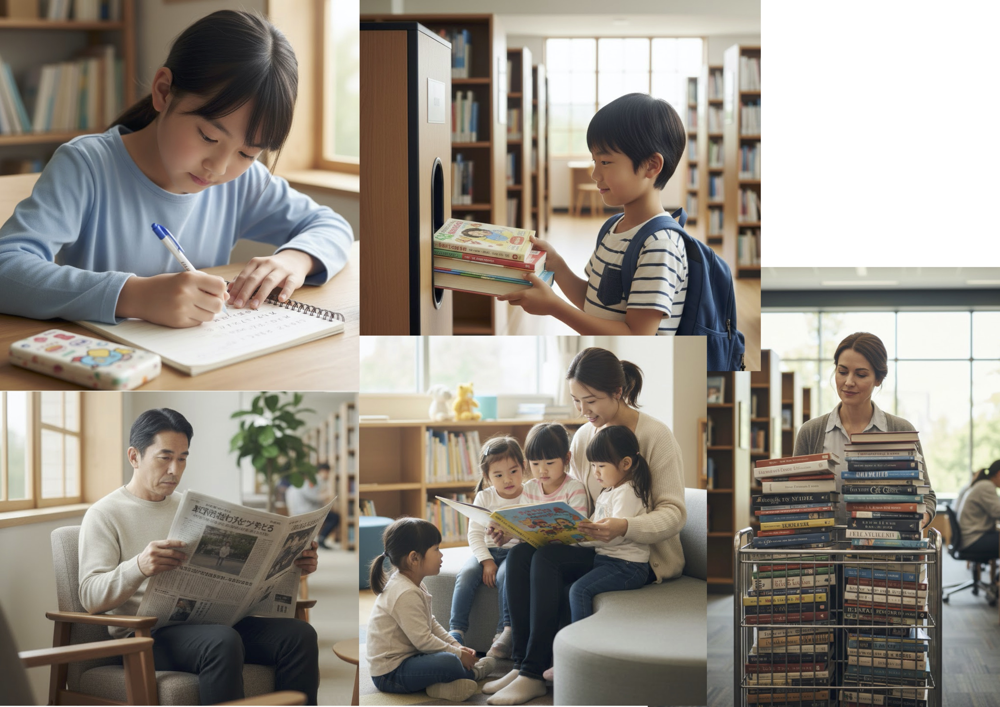

Nowadays, many public libraries provide digital books to their members. People can borrow them from the library on the Internet. By doing so, they can enjoy reading library books without leaving home. Also, digital books do not take up space, so libraries can offer more kinds of books.
Q: According to the passage, how can people enjoy reading library books without leaving home?
Answer: By borrowing digital books from the library on the Internet.
No. 2: Picture A (Actions)

女子/ノート
男子/返却
男性/新聞
女性/カート
女性/読み聞かせ
A: A girl is writing something in her notebook.
B: A boy is returning some books.
C: A man is reading a newspaper.
D: A woman is pushing a cart.
E: A woman is reading a book to some children.
No. 3: Picture B (Situation)
Keywords: read a book / children / noisy / cannot
Pattern 1: The man cannot read his book because the children are too noisy.
Pattern 2: The children are very noisy, so the man cannot concentrate on his book.
No. 4: Your Opinion
Do you think all textbooks will be replaced by e-books in the future?
Hint: light / save paper / watch videos
1. Tablets are very light, so they are easy to carry to school.
2. We can save a lot of paper, which is good for the environment.
3. Digital textbooks can show videos, so they are very useful for studying.
Hint: tired eyes / distraction / expensive
1. Looking at screens for a long time makes students' eyes tired.
2. Students might play games on tablets instead of studying.
3. Buying devices for every student is very expensive for schools.
No. 5: Your Opinion
Q: Do you think it is a good idea that libraries offer e-books?
Hint: borrow anytime / save time / many books
1. People can borrow books anytime even if the library is closed.
2. It saves time because they do not have to travel to the library.
3. Libraries can offer many kinds of books without needing more shelves.
Hint: visit library / digital devices / paper books
1. If people use e-books, they will stop visiting the library building.
2. Some people, especially elderly people, do not know how to use digital devices.
3. Many people still prefer the feeling of reading real paper books.
Step 6: Vocabulary Review (15 Questions)
英検準2級 Interview Practice (Instructor's Sheet)
Topic: Digital Books in Libraries
No. 1 Reading & Question
Instruction:
"According to the passage, how can people enjoy reading library books without leaving home?"
Nowadays, many public libraries provide digital books to their members. People can borrow them from the library on the Internet. By doing so, they can enjoy reading library books without going to the library. Also, digital books do not take up space, so libraries can offer more kinds of books.
Answer:
By borrowing digital books from the library on the Internet.
No. 2 Picture A (Actions)
Instruction:
"Tell me as much as you can about what the people are doing."
A: A girl is writing something in her notebook. / B: A boy is returning some books.
C: A man is reading a newspaper. / D: A woman is pushing a cart.
E: A woman is reading a book to some children.
No. 3 Picture B (Situation)
Instruction:
"Now, look at the man in Picture B. Please describe the situation."
• The man cannot read his book because the children are too noisy.
• The children are very noisy, so the man cannot concentrate on his book.
No. 4 Your Opinion
Question:
"Do you think all textbooks will be replaced by e-books in the future?"
(Yes): Tablets are very light, so they are easy to carry to school. / We can save a lot of paper.
(No): Looking at screens for a long time makes students' eyes tired. / Students might play games.
No. 5 Your Opinion
Question:
"Do you think it is a good idea that public libraries offer e-books?"
(Yes): People can borrow books anytime even if the library is closed. / It saves time.
(No): If people use e-books, they will stop visiting the library building. / Some people, especially elderly people, do not know how to use digital devices. / Many people still prefer paper books.